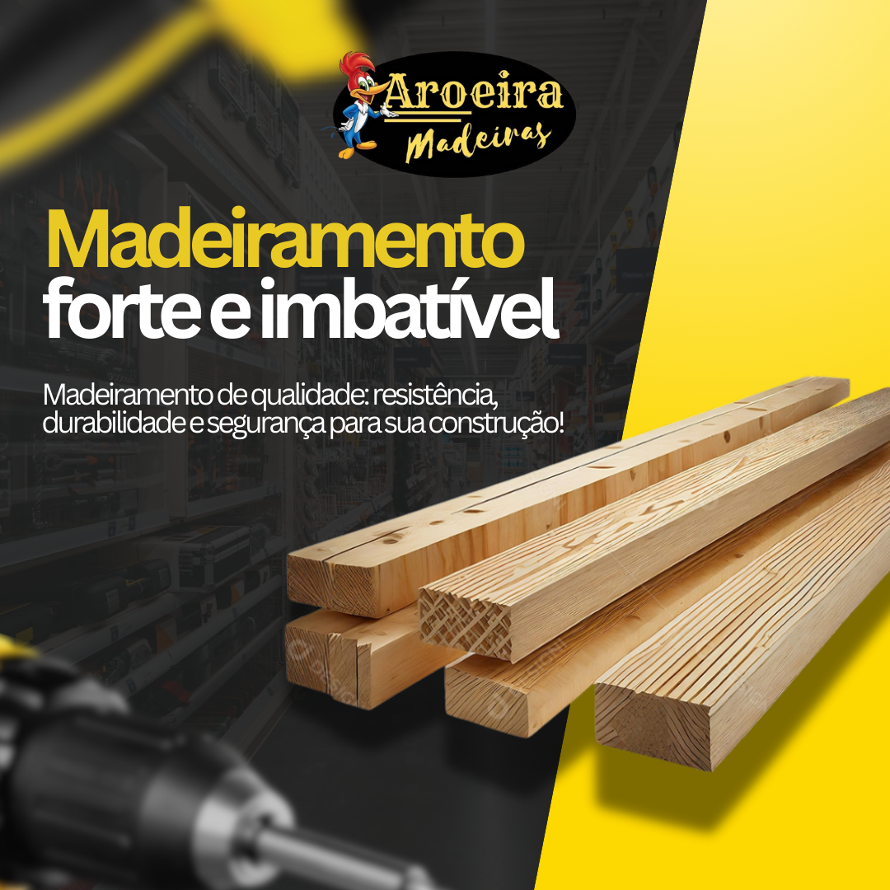

|  | ||
Sou estudante de Análise e Desenvolvimento de Sistemas na UTFPR, cursando o segundo período. Já trabalhei como estagiária de marketing para uma grande empresa, adquirindo experiência com mídias digitais e estratégias de comunicação. |
Atualmente trabalho com criação digital de forma autonôma, para empresas, pessoas e igrejas, tambem faço cobertura de eventos como storymaker. |
Gosto da área de designer ux/ui, com foco em desenvolvimento de sistemas. Busco aperfeiçoar continuamente meus conhecimentos em programação, desenvolvimento de interfaces, arquitetura de sistemas. |
| CANVA | CANVA | CANVA |